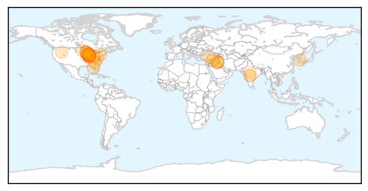
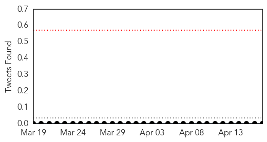

Influenza
30-Day Web Trend
0 alerts, 0 warnings
30-Day Twitter Trend
1 alerts, 0 warnings
Article Locations
Article Confidences
Top Articles:
- 0.999
- Govt forms panel to tackle outbreak
- 0.983
- Canine influenza confirmed in Lafayette
- 0.964
- Keep dogs home to contain flu outbreak, vets say
- 0.960
- Glaxo recalls flu vaccine due to potency problem
- 0.946
- Asian Strain of Flu Never Before Seen in the U.S. Sickens 1...
- 0.919
- Canine influenza confirmed in Tippecanoe County dogs
- 0.919
- Dog Owners Cautious About Spread of Dog Flu
- 0.899
- Chicago-area dog flu cases climb to over 1,100, including six deaths
- 0.879
- Preventing And Treating Against New Dog Flu Strain
- 0.859
- Dog flu prevention after illness confirmed in Tippecanoe Co.
- 0.831
- Vets give advice to Minnesota dog owners as canine flu spreads west
- 0.786
- Minnesota officials: Bird flu threat could last years
- 0.782
- Canine flu outbreak running through Midwest
- 0.769
- Area dog owners on alert after flu sickens animals
- 0.763
- Purdue confirms 5 cases of canine flu in Tippecanoe Co.
- 0.756
- Dog Flu Infects Thousands Of Animals In US
- 0.751
- April 17, 2015 Archives
- 0.751
- April 17, 2015 Archives
- 0.751
- April 16, 2015 Archives
- 0.751
- April 16, 2015 Archives
- 0.751
- April 16, 2015 Archives
- 0.751
- April 16, 2015 Archives
- 0.751
- April 16, 2015 Archives
- 0.751
- April 16, 2015 Archives
- 0.751
- April 16, 2015 Archives
- 0.721
- New Outbreaks of High-path Avian Flu in Minnesota, Wisconsin, South Dakota
- 0.719
- Purdue confirms 5 cases of canine flu in Tippecanoe Co.
- 0.702
- Turkey virus: From China to Minnesota farms
- 0.600
- Minnesota Bird Flu Outbreak Spreading Across US
- 0.594
- Thousands of US Midwest dogs infected with Asian flu variety — Nation — Bangor Daily News — BDN Maine
- 0.589
- Plea To Chicago: Help Save Scrappy
- 0.563
- Surveillance in Odisha district after bird flu in Andhra
Top Tweets:
-
No tweets found for Apr 17, 2015
Hepatitis
30-Day Web Trend
0 alerts, 0 warnings

30-Day Twitter Trend
0 alerts, 0 warnings

Article Locations

Article Confidences
Top Articles:
Top Tweets:
-
No tweets found for Apr 17, 2015